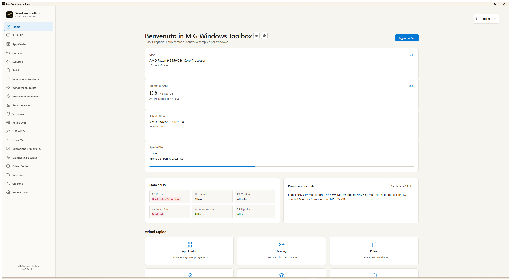

{kind=link}
Il mio PC
Hardware, dischi e stato generale del computer in una sezione semplice da consultare.
 GregorioManganoParliamone ↗
GregorioManganoParliamone ↗Windows · Beta pubblica
Un centro di controllo per Windows che raccoglie software, manutenzione, riparazione, sicurezza, rete e altri strumenti in un'interfaccia più chiara.

Screenshot ufficiale: la schermata Home di M.G Windows Toolbox. Apri immagine
Che cos'è
M.G Windows Toolbox raccoglie in un solo posto molti strumenti che normalmente si trovano in schermate diverse di Windows, nei programmi già installati o in procedure poco immediate. È pensato per chi desidera capire meglio il proprio PC e raggiungere le operazioni comuni con un percorso più ordinato. Prima di agire, il Toolbox mostra lo stato reale del sistema e spiega che cosa sta per fare. Alcune funzioni usano strumenti ufficiali già presenti in Windows e possono chiedere l'autorizzazione amministratore: questo accade quando una scelta modifica un'impostazione del sistema. Non promette miracoli o prestazioni automatiche; aiuta invece a leggere, organizzare e usare con più consapevolezza le possibilità già disponibili sul computer.
Caratteristiche principali
Hardware, dischi e stato generale del computer in una sezione semplice da consultare.
Ricerca, installazione, aggiornamento e rimozione di programmi tramite WinGet.
Ogni funzione prova a chiarire cosa fa prima della conferma, senza nascondere i passaggi.
Cosa puoi fare
Consultare hardware, dischi, profili energetici, sospensione, servizi e avvio.
Cercare, installare, aggiornare o rimuovere programmi desktop e app Microsoft Store.
Controllare file temporanei e spazio recuperabile, oppure aprire gli strumenti Windows di riparazione.
Leggere Defender, Firewall e connessione, con opzioni per DNS e ripristino della configurazione salvata.
Trovare strumenti utili per giocare, programmare, usare il terminale o provare software AI locale.
Raggiungere Rufus, ISO ufficiali, Linux Mint in macchina virtuale, migrazione e salute del sistema.
Installazione e download
La pagina Release raccoglie il pacchetto ufficiale e i checksum. Nel repository GitHub trovi guida, informazioni sui due metodi di installazione e spiegazione delle funzioni disponibili.
Scopri anche
Ti è stato utile questo progetto?Un piccolo aiuto contribuisce a tenere disponibili software e contenuti gratuiti.
♡ Sostieni il progetto